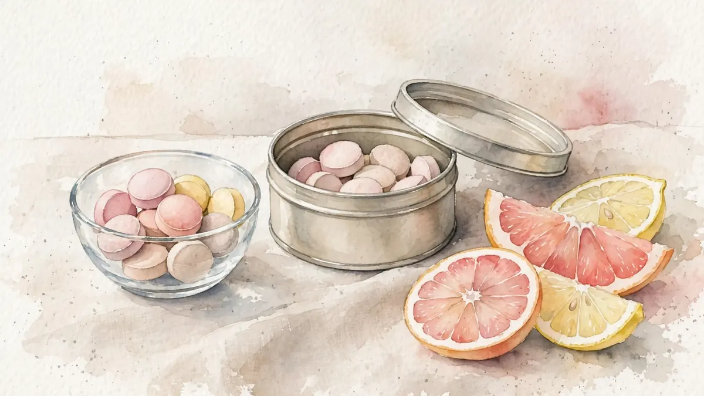

トップ ＞ インナーケア・サプリ ＞ チュアブル・水なしタイプの表示の見方
チュアブル・水なしタイプの表示の見方

チュアブルタイプや「水なしで飲める」タイプのサプリメントは、手軽さが魅力です。その分、表示の読み方には独特のポイントがあります。この記事では、チュアブル・水なしタイプの表示の見方を整理します。
「噛んで食べる」という案内の意味
チュアブルタイプには、「噛んでお召し上がりください」「そのまま噛んで」という案内が書かれています。これは、水で飲み込む粒タイプとは使い方が違うという表示です。逆に、水なしタイプの粒でも、形状によっては水と一緒に飲む案内のものもあります。自分の商品の案内文がどちらなのかを、まず確認してください。
単位の表示にも注意が要ります。「1個あたり」の栄養成分表示と、「1日分（◯個）あたり」の表示が併記されていることがあります。比べるときは、どちらの単位で読んでいるかをそろえることが基本です。
お菓子と分ける、置き場所の工夫
味のついたチュアブルタイプは、お菓子と見た目や味が近いものがあります。家庭では、お菓子の棚とは別の場所に置き、目安量の管理ができる状態にしてください。特に子どものいる家庭では、手の届く場所に置かないことが大切です。目安量は「1日◯個まで」という総量の案内であり、お菓子のように自由に食べるものではありません。
糖質やエネルギーの表示も、このタイプでは読んでおきたい項目です。甘味のあるタイプは、1日分の合計でどれくらいになるかを、表示から確認できます。味の好みで選ぶ場合も、表示の数字とセットで判断するのが基本です。
外出先での扱いと保管
水なしタイプは外出先で使いやすい反面、持ち運びの保管条件には注意が要ります。熱でやわらかくなりやすいタイプもあるため、保管表示を確認し、車の中など温度の上がる場所への置きっぱなしは避けてください。個包装のものは携帯に向きますが、切り離した後の保管も、湿気を避ける場所が基本です。
手軽なタイプほど、案内文を読み飛ばしがちです。「噛むのか・水は要るのか・1日何個か」の3点を買ったときに確認しておけば、使い方で迷うことはありません。
保管は「湿気」と「取り違え」に注意
チュアブルタイプは、噛む食感を保つためにも、湿気の少ない場所での保管が基本です。個包装でないものは、蓋を都度閉め、乾燥した場所に置いてください。粒同士が付きやすくなっているなど、状態の変化に気づいたら、保管場所を振り返るきっかけにしてください。
職場のデスクで使う場合は、引き出しの中でも、お菓子と別の場所に分けておくと、目安量の管理がしやすくなります。「1日◯個」という総量は、デスクでも食卓でも同じです。置き場所ごとに小さなメモで目安量を書いておく方法も有効です。手軽なタイプほど、管理の仕組みで差がつきます。
味の種類が複数ある商品では、種類ごとに目安量が同じかどうかも確認してください。見た目が似ていても、1個あたりの単位や目安の個数が違うことがあります。新しい味を試すときも、まず表示から読む順番は変わりません。
チュアブルタイプは、噛む回数や口の中に残る時間も、続けやすさに関わります。試す段階では、味だけでなく、噛み心地や後味まで含めて自分の感覚を確かめてください。表示では確かめられない部分だからこそ、少量で試す順番が大切です。
歯の治療中など、噛むこと自体に事情がある場合は、形状の違うタイプを選ぶ判断もあります。形状の選択肢が多いことは、このカテゴリの良いところです。自分の口の状態に合う形を、表示と感覚の両方で選んでください。水なしタイプの手軽さは、置き場所と目安量の管理があってこそ活きます。
セラフィナ「水なしタイプは手軽なぶん、お菓子と分ける置き方が大事だね」

セラフィナ｜美容の道具箱の案内役
「量と表示が分かれば、美容は失敗しない。」——セラフィナと白猫のモコが、買う前のチェックポイントを案内します。綺麗になりたい気持ちに正直に、でも表示は冷静に読むのが、このサイトの約束です。